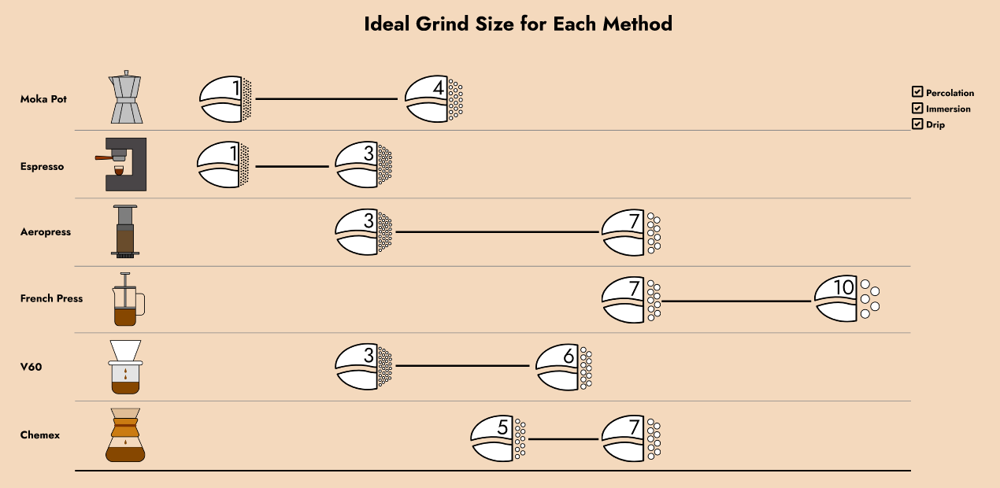

Moka Pot: Brewing time for Moka pot coffee typically ranges from 5 to 7 minutes. This method involves boiling water in the bottom chamber, which creates pressure that pushes water through coffee grounds in the middle chamber and up into the top chamber.
Espresso: Espresso is brewed very quickly, usually taking around 25 to 30 seconds. The high pressure and finely ground coffee used in an espresso machine extract intense flavors and aromas from the coffee grounds in a short amount of time.
AeroPress: Brewing time with an AeroPress can vary, but it typically falls between 1 to 2 minutes. This method involves steeping coffee grounds in hot water and then using air pressure to force the coffee through a filter.
French Press: French press coffee usually takes about 4 minutes to brew. This method involves steeping coarsely ground coffee in hot water and then pressing down a plunger to separate the grounds from the brewed coffee.
V60: Brewing time for V60 pour-over coffee typically ranges from 2.5 to 3.5 minutes. This method involves pouring hot water over coffee grounds in a cone-shaped dripper and allowing the water to drip through a paper filter into a carafe or cup.
Chemex: Brewing time for Chemex coffee usually takes around 4 to 5 minutes. This method involves pouring hot water over coffee grounds in a Chemex brewer, which uses a thick paper filter to produce a clean and clear cup of coffee.
These brewing times can vary depending on factors such as grind size, coffee-to-water ratio, and personal preferences for strength and flavor. It's essential to experiment and adjust these variables to achieve your desired cup of coffee.
Grind Size

Moka Pot: For Moka pot coffee, a medium-fine grind is recommended. The grind size should be slightly finer than drip coffee but coarser than espresso. Aim for a consistency similar to table salt.
Espresso: Espresso requires a very fine grind, much finer than most other brewing methods. The grind size should be similar to powdered sugar or fine sand. This fine grind allows for the high-pressure extraction necessary to produce espresso's rich flavor and crema.
AeroPress: AeroPress is versatile and can accommodate various grind sizes. However, a medium to fine grind is typically recommended, similar to the grind size used for drip coffee. The exact grind size can vary based on your preferred brewing method with the AeroPress.
French Press: French press coffee calls for a coarse grind. The grounds should have a consistency similar to breadcrumbs or coarse sea salt. A coarse grind helps prevent over-extraction and produces a fuller-bodied cup of coffee.
V60: V60 pour-over coffee requires a medium-coarse grind. The grind size should be coarser than table salt but finer than French press. This allows for proper extraction without clogging the filter and results in a clean and flavorful cup of coffee.
Chemex: Chemex coffee also benefits from a medium-coarse grind. The grind size is similar to that used for V60 pour-over, coarser than drip coffee but finer than French press. This grind size helps maintain the ideal flow rate and produces a clean and bright cup of coffee.
Remember, the grind size plays a crucial role in coffee extraction. It affects the rate at which water interacts with the coffee grounds and ultimately influences the flavor, strength, and clarity of the brewed coffee. Adjusting the grind size based on the brewing method and personal preference is key to achieving the perfect cup.
Recommended
Please do your own research as these are just general recommendations